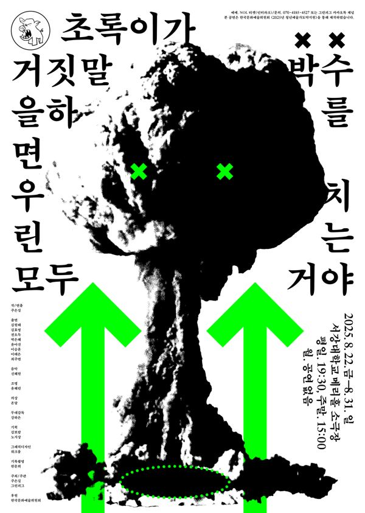

그린피그 > 아카이브 > 초록이가 거짓말을 하면 우린 모두 박수를 치는 거야
주은길 작·연출

청소년의 성장 서사를 거부하고 '성장할 수 없음'을 내세운 작품. 선형적이고 착한 이야기 구조로 익숙한 청소년극을 해체해 실험극으로 만들었다.
2025.8.22–31 / 서강대 메리홀 소극장 - 청년예술가도약지원사업
이전: 〈한 겨울의 열대야〉 | 다음: 〈바보런하기-타오르는 어둠 속에서〉
아카이브로 돌아가기 | 아무 작품이나
발행일 2026.11.9